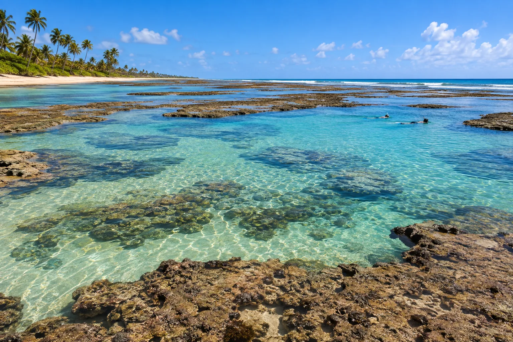

Porto de Galinhas
Pernambouc, Brésil · snorkeling, baignade

Piscines naturelles formées par le récif à marée basse, pleines de poissons colorés. Accès en jangada traditionnelle.
- Lieu
- Pernambouc, Brésil
- Niveau
- Débutant
- Activités
- snorkeling, baignade
- Type d'eau
- Mer / océan
- Coordonnées
- -8.51, -35.00 (position approximative du secteur)
Dangers à connaître
- Récif protégé.
- Courant quand la marée remonte.
Le conseil d'Ocean Buddy
Consulte l’horaire des marées : les piscines n’apparaissent qu’à marée basse.
Ouvrir dans Ocean Buddy Télécharger sur l'App Store
Source : Fiche Ocean Buddy · septembre 2026 · à vérifier localement.